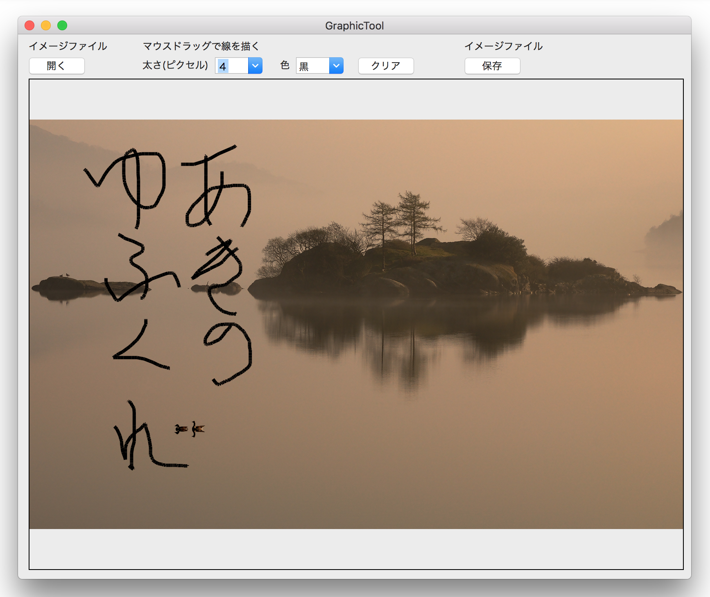
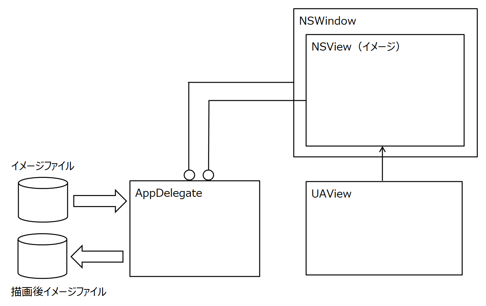

イメージの上にフリーハンドの線を描く

画像をクリックすると動画になります。
イメージファイルを開く
オープンパネルで指定したイメージファイルを読み込み画面に表示する。イメージのサイズは800x600ピクセルの大きさに変換する。縦横比を維持するためサイズによって上下または左右に余白が生じる。
フリーハンドの線を描く
マウスのドラッグの軌跡に応じた線をビューに描画する。
線を消す
右マウスドラッグで矩形領域を指定し、その中の線を消去する。
ファイルに出力する
描画したイメージをイメージファイル（png）に保存する。出力先はセーブパネルにより指定する。
クラス構造図
GitHub
実装のポイント
線を引く
指定した点と点の間に直線を引く。線は NSGraphicsContextクラスの描画メソッドによりグラフィックコンテキスト上に直接出力する。マウスのドラッグイベントが発生するたびにごく短い直線を引くことにより、目視ではフリーな曲線を描いているように見える。
線を消去する
指定された矩形の中の線を全て消去する。線はマウスドラッグのイベントにより作成された線の集合である。個々の線はドラッグのスピードにより長さが異なるので、長い線を消去した場合、矩形の外側の線が消去されたように見える。これを回避するために矩形の境界上にある線は、矩形の外側に出ている分だけ残すことにする。（かなりややこしい。実装の方向性が良くないようだ。）